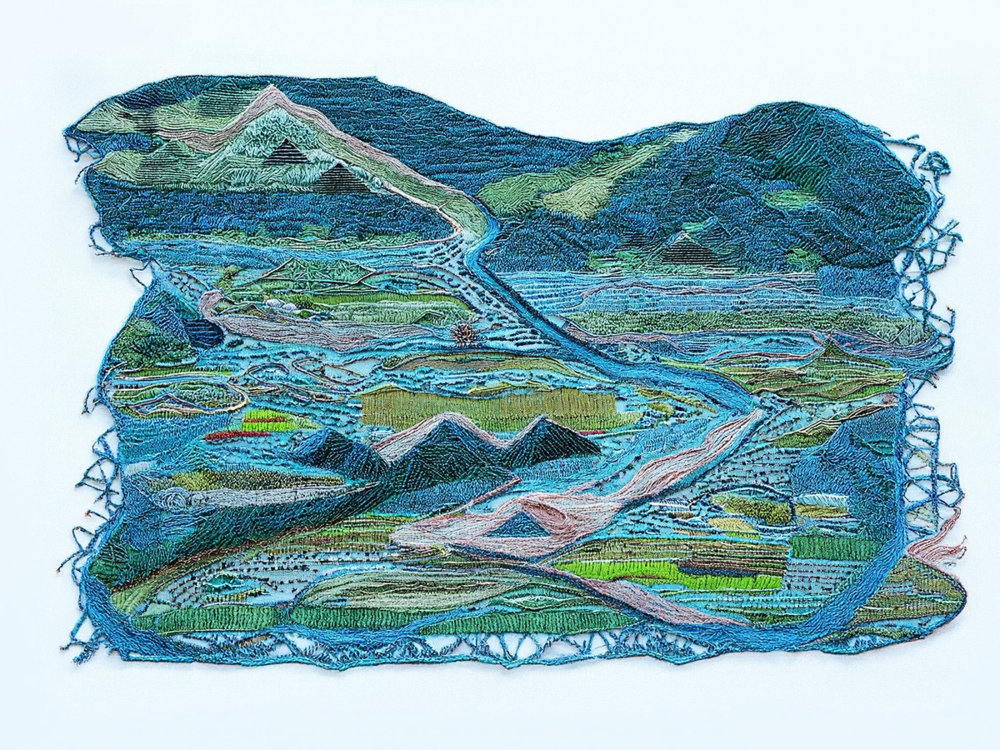
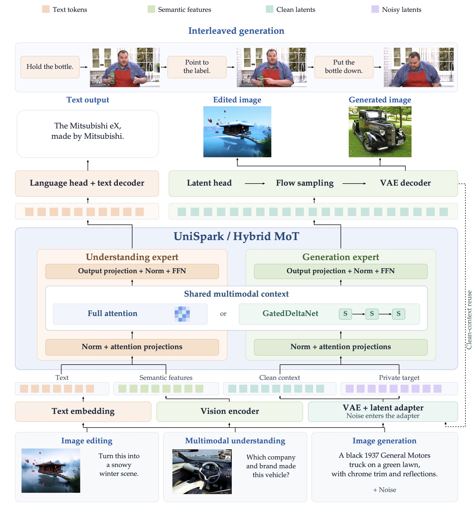
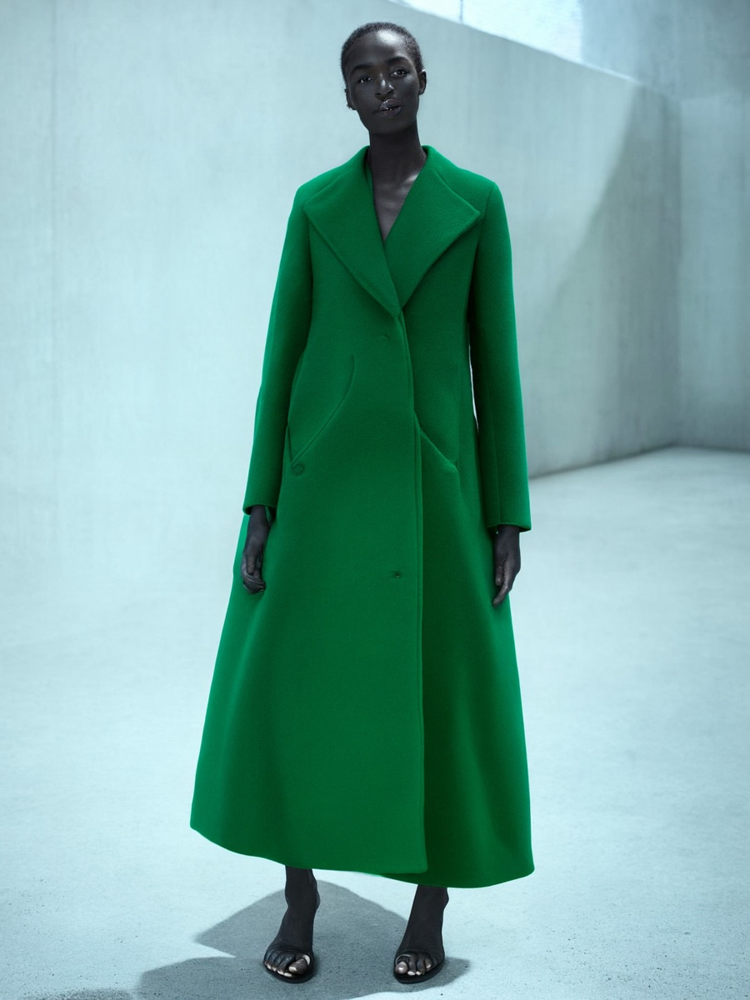
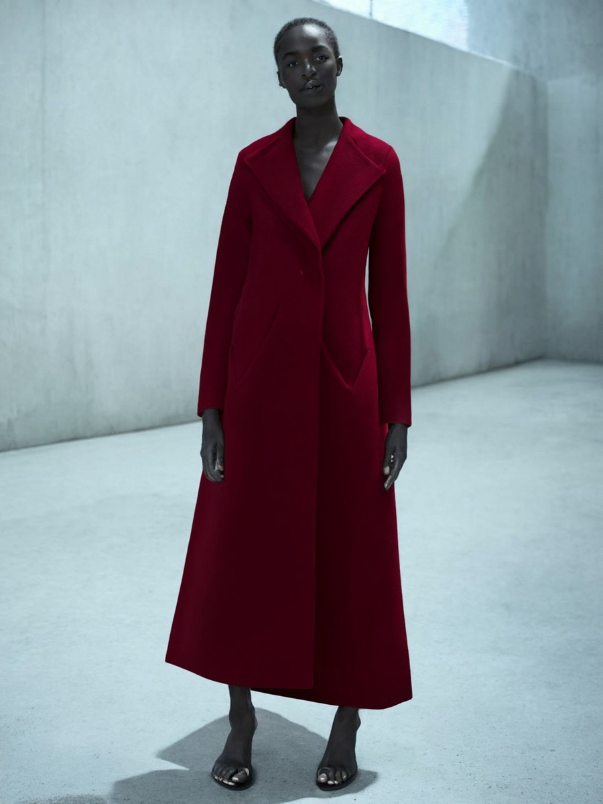
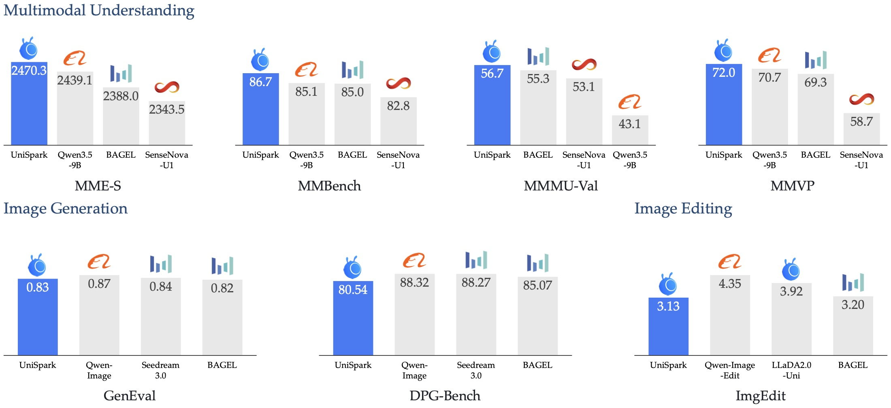

UniSpark
Exploring Hybrid Attention for
Multimodal Understanding and Generation
Understand, create, and edit within one shared framework.



Selected generations from the UniSpark paper.
View the full galleryHybrid attention.
Shared visual context.
Can hybrid attention support both understanding and visual generation? UniSpark brings full attention and recurrent linear attention into a shared Mixture-of-Transformer-Experts backbone.
Autoregressive text prediction and visual flow matching connect language and images. Private noisy targets remain separate from reusable clean content, so completed outputs can provide context for later predictions.
Training progresses from image resolution scaling up to 2K to unified supervised refinement, followed by video adaptation with mixed image and video tasks. The understanding branch stays frozen during video adaptation.
Explore the model architecture

From words to visual worlds
Portraits, architecture, natural scenes, crafted objects, art, and cartoons. Explore six categories, including anime, manga, and animated characters.
Small instructions.
Meaningful changes.
Reference-conditioned editing changes selected attributes while retaining the scene. Choose an example and drag the divider to compare.


SourceEditedDrag to compare · Use arrow keys when the slider is focused
Beyond a single image
Interleaved prediction carries visual context across successive outputs. These four-image sequences illustrate scene continuity as actions unfold.
Understanding, generation, and efficiency
Explore benchmark breakdowns, evaluation settings, and the trade-offs behind each result. Expand a table to see all model entries reported in the paper.
View the benchmark overview

Source: Technical report, Experiments. Values follow the manuscript tables; benchmark papers are linked in each evaluation-settings panel.
Reference
@misc{pan2026unispark,
title = {UniSpark: Exploring Hybrid Attention for Multimodal Understanding and Generation},
author = {Pan, Jiancheng and Liu, Yuzheng and Cao, Hengyuan and Zhang, Qiyuan and Li, Yangyan and Gong, Biao},
year = {2026},
note = {Manuscript}
}